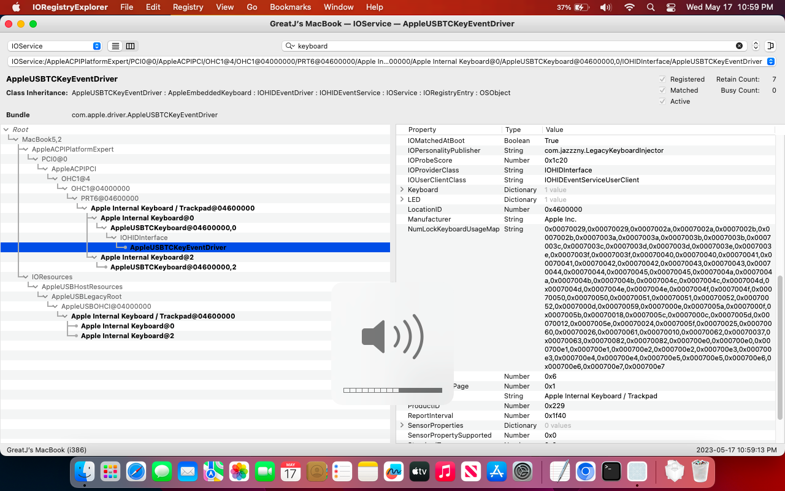

LegacyKeyboardInjector.kext Kernel Extension for OCLPAfter acquiring a MacBook5,2 (Mid-2009) for OCLP development, I noticed that the machine's keyboard shortcuts did not work - the topcase keyboard was recognized as a generic one.
This was quite inconvienent, as none of the function keys worked properly. So, I set off to develop a fix.
To set off, I looked for what was responsible for mapping keyboard layouts on macOS. After researching for Ventura, we quickly determined that AppleUSBTopCase.kext is responsible for mapping, so this where I started my search.
After comparing AppleUSBTopCase from 10.11 El Capitan and 12 Monterey, I quickly noticed that Monterey's kext's .plist file was missing several keys.
Fortunately, AppleUSBTopCase was removed from Ventura. So we can just install the version containing the keys to restore full function, right?
Not quite. While that would work on Ventura, it wouldn't on Monterey and older...
One useful kernel feature of macOS is the ability to install codeless kexts - kexts that can inject properties without needing any code.
By developing a codeless kext that reinjects the missing keys into macOS, I'm able to restore full keyboard support!
This fix was incorporated in OCLP v0.6.6.
However, one issue remains with the MacBook5,2 - trackpad support. Apple removed all support for the 5,2's legacy 2-finger trackpad with 10.12 Sierra by botching the code in IOHIDFamily. But thats an issue for another day.